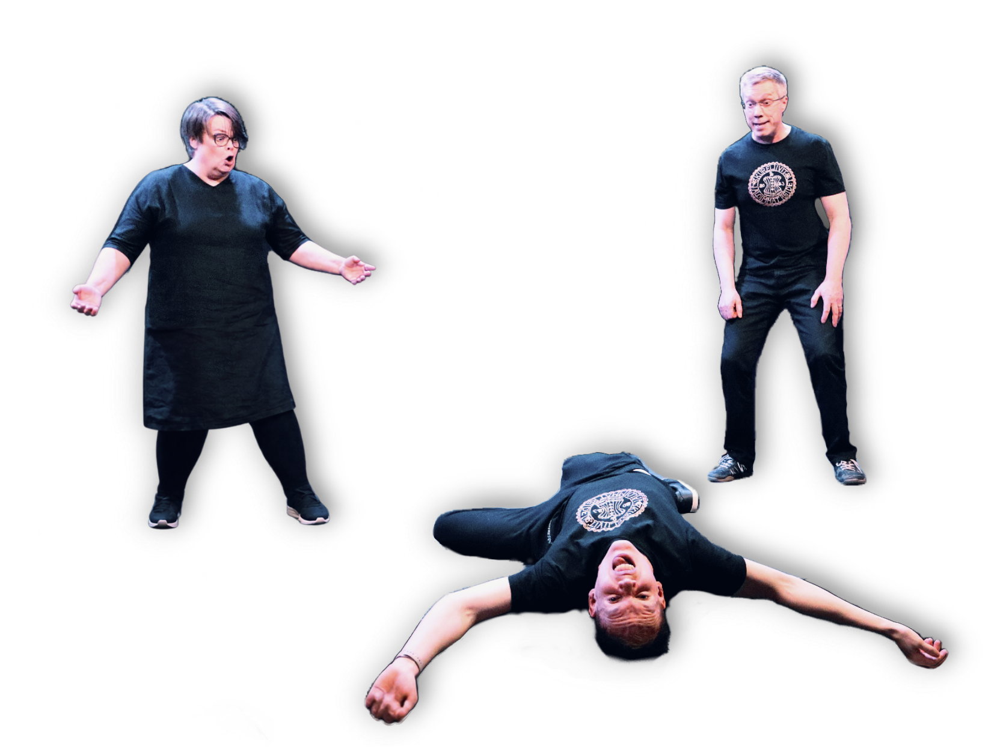

Tehdyt keikat
- Huvi La Runo, Tahmelan Huvila, Tampere, 17.2.2027
- Rouheita riimejä - runo- ja musaimproilta, Vastavirta-Klubi, Tampere, 28.1.2027
- Yksityistilaisuus - syntymäpäivät, Nokia, 10.10.2026
- Yksityistilaisuus - kevätjuhlakaronkka/eläkejuhlat, Vesilahti, 25.9.2026
- Improvisoitu rikosmysteeri, Hietaniemen Kartanonavetta, Lempäälä, 19.9.2026
- Kyläillään-improilta, Kuokkalan museoraitti, Lempäälä, 30.7.2026
- Improvisaatioteatteria Kuokkalankosken markkinoilla, Kuokkalan museoraitti, Lempäälä, 18.7.2026
- Heinälatorakkautta-improilta feat. Kusti Vuorinen, Hietaniemen kartanonavetta, Lempäälä, 16.6.2026
- Lempimusaa-improshow feat. Kusti Vuorinen, Myllyrannan tapahtumapuisto, Lempäälä, 6.6.2026
- Improtehdas-klubi: Kohtalonpyörä, Tehdassaaren kahvila, Nokia, 13.5.2026
- Kehystämättömät-improilta feat. Kusti Vuorinen, Kuhmalahden Taidepappila, Kangasala, 25.4.2026
- Improklubi Riihi, Bistro Vilja, Tampere, 25.3.2026
- Supersattumia-improshow, Tukkateatteri, Tampere, 5.3.2026
- Tammikuun vatsakohdat -improshow, Kortteliteatteri, Helsinki, 31.1.2026
- Yksityistilaisuus - vauvakutsut, Pälkäne, 25.1.2026
- Yksityistilaisuus - pikkujoulut, Haulitorni, Tampere, 12.12.2025
- Improtehdas-klubi: Jouluprässi, Tehdassaaren kahvila, Nokia, 12.12.2025
- Yksityistilaisuus - pikkujoulut, Akun Tehdas, Ylöjärvi, 21.11.2025
- Yksityistilaisuus - pikkujoulut, Nokia, 14.11.2025
- Alakulttuurifest, runoimpro, Finlayson, Tampere, 8.11.2025
- Improtehdas-klubi: Valtapeli, Tehdassaaren kahvila, Nokia, 7.11.2025
- Yksityistilaisuus - Gaala, Lempäälä, 1.11.2025
- Kauhujen Kangasala 2025: Impro Horror, Kahvila Tyyne, 25.10.2025
- Yksityistilaisuus - syntymäpäivät, Svenska Klubben, Tampere, 4.10.2025
- Improtehdas-klubi: Oi, maamme!, Tehdassaaren kahvila, Nokia, 3.10.2025
- Improtehdas-klubi: Suora lähetys, Tehdassaaren kahvila, Nokia, 5.9.2025
- Amis-Gaala, Virta-kampus, Lempäälä, 29.8.2025
- Yksityistilaisuus - työpaikan virkistyspäivä, Ravintola Tillikka, Tampere, 22.8.2025
- Tapahtumien yö - Artteli on art, Tampere, 7.8.2025
- Improklubi Riihi, Ravintola Teerenpeli, Tampere, 28.5.2025
- Improtehdas 2.0: Kevätjuhla, Tehdassaaren kahvila, Nokia, 16.5.2025
- Yksityistilaisuus - syntymäpäivät, Orivesi, 3.5.2025
- Improtehdas 2.0: Koukuttavat käänteet, Tehdassaaren kahvila, Nokia, 25.4.2025
- Improtehdas 2.0: Runon ja rytmin ilta, Tehdassaaren kahvila, Nokia, 21.3.2025
- Yksityistilaisuus - syntymäpäivät, Tampere, 22.2.2025
- Improtehdas 2.0: Kerrostaloelämää, Tehdassaaren kahvila, Nokia, 21.2.2025
- Improtehdas 2.0: Reploja ja repeilyjä, Tehdassaaren kahvila, Nokia, 17.1.2025
- Pikkujoulushow, Tehdassaaren kahvila, Nokia, 18.12.2024
- Yksityistilaisuus - pikkujoulut, Lempäälä, 13.12.2024
- Yksityistilaisuus - pikkujoulut, Nokia, 30.11.2024
- Yksityistilaisuus - pikkujoulut, Tampere, 15.11.2024
- Yksityistilaisuus - pikkujoulut, Tampere, 14.11.2024
- Yksityistilaisuus - pikkujoulut, Tampere, 2.11.2024
- Improtehdas, Tehdassaaren kahvila, Nokia, 2.10.2024
- Improfestarit, Ravintola Opus K, Lohja, 21.9.2024
- Runoilta, Ravintola Myrskyluoto, Kangasala, 27.8.2024
- Yksityistilaisuus - koulutus- ja virkistyspäivä, Kangasala, 13.6.2024
- Yksityistilaisuus - pikkujoulut, Kangasala, 8.12.2023
- Yksityistilaisuus - pikkujoulut, Tampere, 1.12.2023
- Yksityistilaisuus - häät, Pirkkala, 23.9.2023
